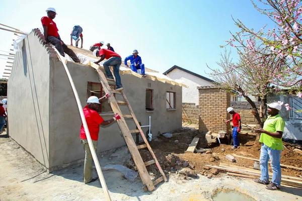
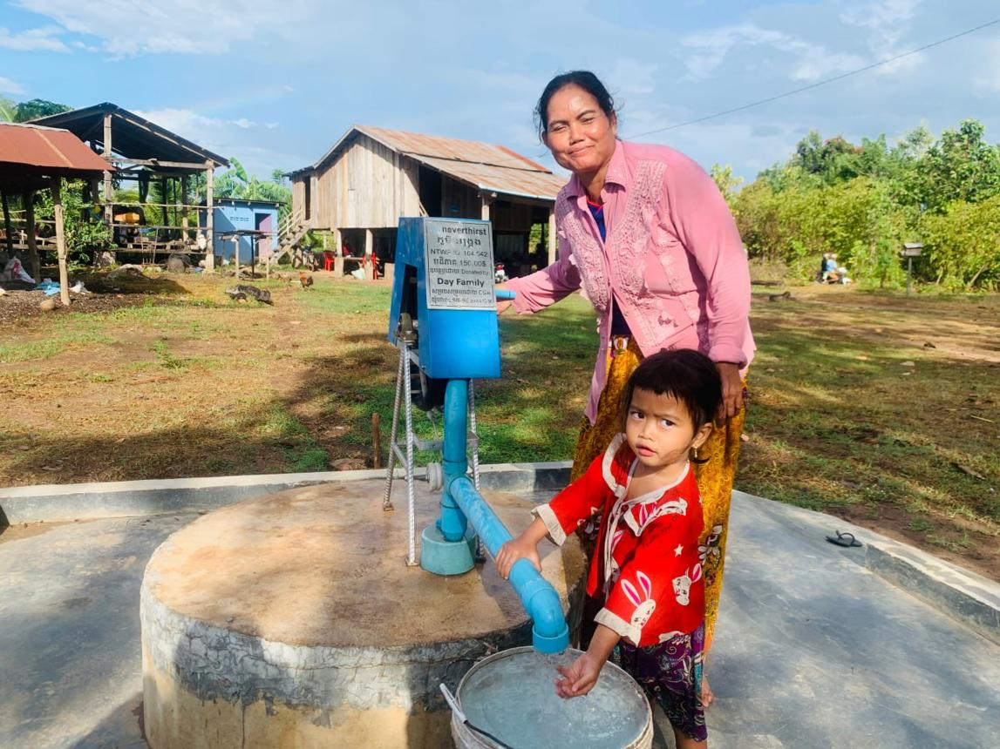

Projects
Follow initiatives that create tangible change.
Completed
5
Running
2

Artificial Limb Distribution
Free prosthetic limbs for differently abled people.
Goal: ₹10,00,000 · Raised: ₹8,00,000
Running
Food Distribution
Providing nutritious meals to poor and needy families.
Goal: ₹5,00,000 · Raised: ₹4,25,000
Running
Shelter & Housing
Building safe homes for underprivileged families.
Goal: ₹20,00,000 · Raised: ₹14,00,000
Running
Clean Water Project
Installing clean drinking-water systems in villages.
Goal: ₹9,00,000 · Raised: ₹7,00,000
Running